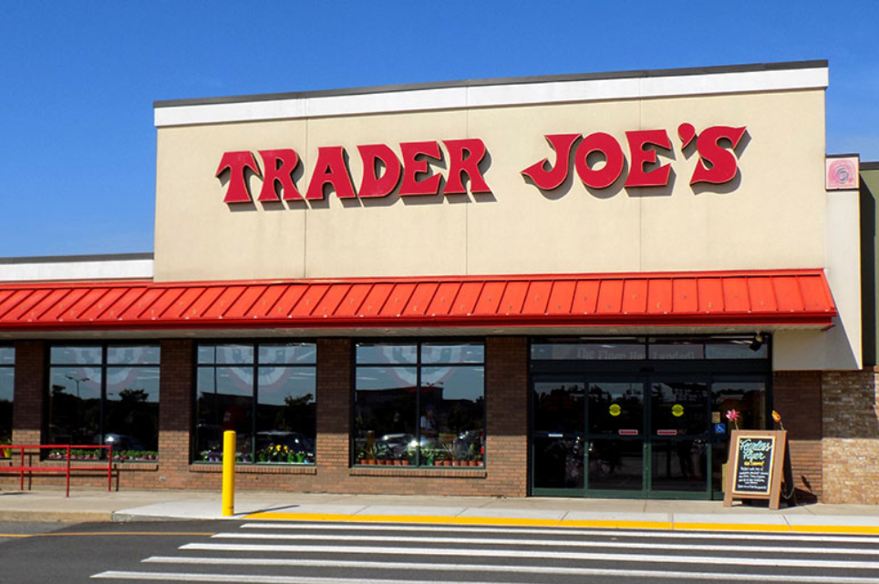

Welcome to Best Frozen Foods at Trader Joe’s!!! After trying out almost every single frozen dish available at Trader Joe’s, I came up with the Top 5 best ones and different ways you can cook them at home or during lunch break. Stock up these delicious alternatives rather than dry emergency food kits during the pandemic!!! Good luck people!!! :DDD
